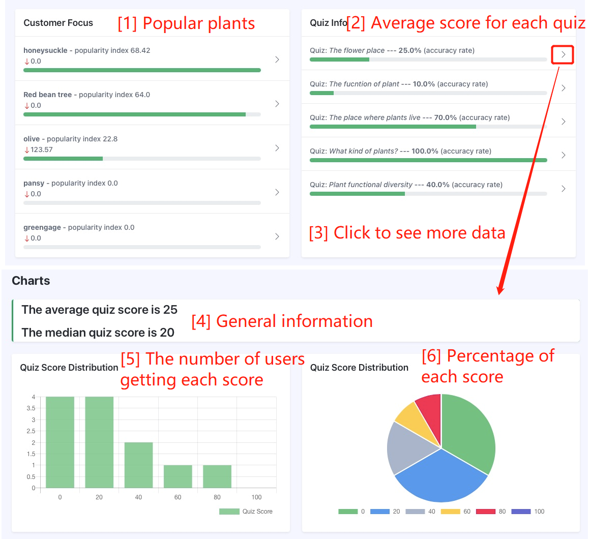

Objectives
The primary objectives of the project are to use innovative and competitive approaches to disseminate knowledge about plants, and to seek sponsorship for the non-profit organization. To achieve these objectives, we will cover the following scope:
- Establish a plant knowledge website based on a knowledge graph to popularize plant knowledge.
- Provide high-quality plant knowledge presented using a knowledge graph.
- Encourage knowledge acquisition through knowledge tests.
- Support charities for every completed knowledge test.
- Provide donation windows and advertisements options to raise funds.
- Supply a user-friendly interface for staff to view information and adjust the knowledge graph
Outcomes
User Website
Quick Start
The navigation bar at the top of the site allows users to access index page, plant cards, intentional contact, donation, quiz, search functions separately.
Plant Cards
This function allows users to learn about plants quickly by browsing through plant study cards that contain pictures, names and other related information. Also, click on a card to view more information about the plant in the form of a knowledge graph. To achieve quick navigation, users can use the search function designed only for plants card. Additionally, users can also find recommended plants for them according to their previous visit and recent trend.
Knowledge Graph
Through knowledge graph, when users view our website, they know how a plant link to other things such as the original growing place, which helps user know this plant better. When presenting knowledge graph, there are some components of this page for more understandable and interesting to use it. Firstly, you have entered plants card page by clicking “Plant” link in the navigation bar. Then, a further click on a particular plant will bring you to the knowledge graph. The five colourful rectangle on the left bottom illustrate the type of node (corresponds to the node color).
Quiz and Follow-up Event
The quizzes generated for learners not only help consolidate their knowledge about related plant but also may save more plants in the world, because we will hold eco-friendly Event when the number of participants of this quiz meet our expectations. You can see all the quizzes on the Quiz games page. Each quiz has information about the number of participants, target number, and subject. Choose a quiz to enter and start the quiz. The results will be shown at the end, but not the correct answers. If you do not get all the answers right, you can try it again. Only when all answers are correct can the number of participants increase. When the number of participants reaches the target number, the organization will hold plant protection activities. Details of the events will be displayed on the home page.
Administrator Website
Data Visualization
This function digitizes visitor volumes, the total amount of donations received, detailed donation information on daily basis. General information about popular plants will also be displayed in administrator’s home page to give administrators a quick view of recent trend. In addition, average accuracy of each quiz topic is shown so administrator can get an overview of quizzes.
There are 4 blocks on the top of administrator home page. They are total donation to our website, today’s donation, today’s number of visits to user portal, and today’s number of users to user portal respectively. Followed two graphs illustrate recent 7 days usage and donation of our website. The green line in the line chart shows the number of visits while the grey one shows the ffgure of users. For dividing user and visit ffgure and getting all charts, you can click on the “More charts” link on the right top of each graph.
The first progress bar summarizes ffve of the most popular plants ranked by their popularity index. The second progress bar gives average score for each quiz topic done by users. 
Furthermore, clicking on each quiz topic will bring you to the quiz info page where the detail distribution of score will be displayed, including average and median value. In the quiz info page, the bar chart’s x-axis is score and the y-axis is the number of users who gets this score. The pie chart records the proportion of people in each score.